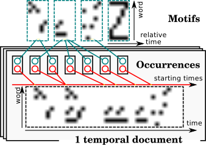

Temporal Topic Models
Topic models are mixture models that can deal with documents represented as bags of features (BoF) and that can extract latent topics (a topic being a distribution over features) from a corpus of documents. For these methods, time series are hence seen as bags of timestamped features. In the methods presented here, the temporal dimension is either included in the BoF representation or added in a refinement step.
Supervised Hierarchical Dirichlet Latent Semantic Motifs
In this work, we build upon the Hierarchical Dirichlet Latent Semantic Motifs (HDLSM) topic model that was first introduced in (Emonet, Varadarajan, & Odobez, 2011). This generative model relies on the extraction of motifs that encapsulate the temporal information of the data. It is able to automatically discover both the underlying number of motifs needed to model a given set of documents and the number and localization of motif occurrences in each document, as shown in the following Figure:

The HDLSM model takes as input a set of quantized time series (aka temporal documents). More specifically, a time series is represented as a contingency table that informs, for each pair $(w, t)$, whether word (or a quantized feature) $w$ was present in the time series at time index $t$ (in fact, it can also account for the amount of presence of word $w$ at time $t$).
HDLSM is a generative model. Its generative process can be described as follows:
- Generate a list of motifs, each motif $k$ being a 2D probability map indicating how likely it is that word $w$ occurs at relative time $t_r$ after the beginning of the motif.
- For each document $j$, generate a list of occurrences, each occurrence having a starting time $t_o$ and an associated motif $k$.
- For each observation $i$ in document $j$:
- Draw an occurrence from the list,
- Draw a pair $(w, t_r)$ from the associated motif,
- Generate the observation of word $w$ at time $t = t_o + t_r$.
As stated above, motifs are represented as probabilistic maps. Each map is drawn from a Dirichlet distribution. This model makes intensive use of Dirichlet Processes (DP) to model the possibly infinite number of motifs and occurrences.
To learn the parameters of the model, Gibbs sampling is used, in which it is sufficient to re-sample motif assignments for both observations and occurrences as well as occurrence starting times. Other variables are either integrated out or deduced, when a deterministic relation holds.
Our supervised variant relies on the same generative process except that an extra component is added that maps motifs (denoted $z$) to classes ($y$) in a supervised learning context. Therefore, this mapping needs to be learned and, once the model is trained, classifying a new instance $\mathbf{x}$ consists in (i) extracting motif probabilities $P(z | \mathbf{x})$ and (ii) deriving class probabilities as:
\begin{equation} P(y | \mathbf{x}) = \sum_z P(y | z) P(z | \mathbf{x}) \end{equation}
We have used this model in the context of action recognition in videos (Tavenard, Emonet, & Odobez, 2013). Here, our words are quantized spatio-temporal features and each time series is the encoding of a video in which a single action is performed. In this context, we show that our model outperforms standard competitors that operate on the same quantized features.
Two-step Inference for Sequences of Ornstein Uhlenbeck Processes
Note. This work was part of Pierre Gloaguen’s postdoc. This is joint work with Laetitia Chapel and Chloé Friguet.
More recently, I have been involved in a project related to the surveillance of the maritime traffic. In this context, a major challenge is the automatic identification of traffic flows from a set of observed trajectories, in order to derive good management measures or to detect abnormal or illegal behaviors for example.
The model we have proposed in this context differs from the one described above in several aspects:
- We are not in a supervised setting, we have no labelled data at our disposal and our goal will rather be to extract meaningful trajectory clusters;
- We are not looking for motifs to be localized in time series (with a possible overlap between motifs, as in the method described above) but rather in the segmentation of trajectories into homogeneous movement modes;
- Each movement mode is described using a continuous time model;
- In order to scale to larger datasets, stochastic variational inference is used (in place of Gibbs sampling) for inference.
Motivating Use Case
The monitoring of maritime traffic relies on several sources of data, in a rising context of maritime big data (Garnier & Napoli, 2016). Among these sources lies the Automatic Identification System (AIS), which automatically collects messages from vessels around the world, at a high frequency. AIS data basically consist of GPS-like data, together with the instantaneous speed and heading, and some vessel specific static information. These data are characterized by their diversity as they (1) are collected at different frequencies (2) have different lengths (3) are not necessarily regularly sampled (4) represent very different behaviors, (5) share common trends or similar subparts (movement modes).
One major challenge in this context is the extraction of movement patterns emerging from the observed data, considering trajectories that share similar movement modes. This issue can be restated from a machine learning point of view as a large-scale clustering task. This tasks involves the definition of clustering methods that can handle such complex data while being efficient on large databases, and that both cluster trajectories as a whole and detect common sub-trajectories.
Model
We define a parametric framework to model trajectory data, i.e. sequences of geographical positions recorded through time. The modeling framework aims to account for two levels of heterogeneity possibly present in trajectory data:
- heterogeneity of a vessel’s movement within a single trajectory, and
- heterogeneity between observed trajectories of several vessels.
Following a common paradigm, we assume that a moving vessel’s trajectory is a heterogeneous sequence of patterns that we call movement modes. Different movement modes along a trajectory refer to different ways of moving in terms of velocity distribution, reflecting different behaviors, activities, or routes. It is assumed that a given movement mode can be adopted by several vessels.
As done in (Gurarie et al., 2017), we characterize movement modes using a specific correlated velocity model, defined in a continuous-time framework, namely the Ornstein-Uhlenbeck Process (Uhlenbeck & Ornstein, 1930) (OUP). One important property of the OUP is that, under mild conditions, the velocity process is an asymptotically stationary Gaussian Process, which can be visualized in the following animation:
```python tags=[“hide_input”] import matplotlib.pyplot as plt from matplotlib import animation from IPython.display import HTML import numpy as np import scipy.linalg
plt.ion()
def gen_animation(Vt, mu): plt.text(x=mu[0] + .5, y=mu[1] + 1.5, s=”Asymptotic distribution:\n$\mathcal{N}(\mu, S)$”, fontsize=16) line, = plt.plot([], [], ‘rx-‘, zorder=0)
# initialization function
def init():
line.set_data([], [])
return (line,)
# animation function
def animate(t):
line.set_data(Vt[:t, 0], Vt[:t, 1])
return (line,)
anim = animation.FuncAnimation(fig, animate, init_func=init,
frames=Vt.shape[0],
interval=20, blit=True)
return anim
def plot_gaussian(mu, sigma, xlim, ylim): N = 100 X = np.linspace(xlim[0], xlim[1], N) Y = np.linspace(ylim[0], ylim[1], N) X, Y = np.meshgrid(X, Y)
# Pack X and Y into a single 3-dimensional array
pos = np.empty(X.shape + (2,))
pos[:, :, 0] = X
pos[:, :, 1] = Y
def multivariate_gaussian(pos):
n = mu.shape[0]
Sigma_det = np.linalg.det(sigma)
Sigma_inv = np.linalg.inv(sigma)
N = np.sqrt((2*np.pi)**n * Sigma_det)
# This einsum call calculates (x-mu)T.Sigma-1.(x-mu) in a vectorized
# way across all the input variables.
fac = np.einsum('...k,kl,...l->...', pos-mu, Sigma_inv, pos-mu)
return np.exp(-fac / 2) / N
# The distribution on the variables X, Y packed into pos.
Z = multivariate_gaussian(pos)
# Create a contour plot
plt.contour(X, Y, Z, levels=5, colors=["k"]) ```
def simulate_oup(V0, mu, gamma, sigma, delta_t, n_samples):
"""An Ornstein Uhlenbeck is a solution of:
dX(t) = \Gamma (X(t)−\mu) dt + \Sigma dW(t), X0=x0
In this case, the solution is a Markov process, with an
explicit transition law:
X(t+\Delta) | {X(t)=x_t} \sim \mathcal{N}(m_\Delta,V_\Delta)
with:
m_\Delta = \mu + \exp(−\Gamma \Delta)(x_t−\mu)
V_\Delta = S − \exp(−\Gamma \Delta) S \exp(−\Gamma \Delta)^T
vec(S)=(\Gamma \oplus \Gamma) − 1 vec(\Sigma \Sigma^T)
"""
d = mu.shape[0]
exp_g = scipy.linalg.expm(-delta_t * gamma)
S = scipy.linalg.solve(
np.kron(gamma, np.eye(d)) + np.kron(np.eye(d), gamma),
sigma.dot(sigma.T).reshape((-1, ))
).reshape((d, d))
v_delta = S - exp_g.dot(S).dot(exp_g.T)
samples = np.empty((n_samples, d))
for t in range(n_samples):
V_prev = V0 if t == 0 else samples[t - 1]
m_delta = mu + np.dot(exp_g, V_prev)
samples[t] = np.random.multivariate_normal(mean=m_delta,
cov=v_delta)
return samples
np.random.seed(0)
dt = .05
n_times = 300 # Number of timestamps
d = 2
# UOP parameters
mu = np.array([0., 0.])
gamma = np.array([[3., 1.], [-1., 2.]])
sigma = np.diag([.5, 2.])
Vt = np.empty((n_times + 1, d))
Vt[0] = np.array([10., 10.])
Vt[1:] = simulate_oup(V0=Vt[0], mu=mu, gamma=gamma, sigma=sigma,
delta_t=dt, n_samples=n_times)
fig = plt.figure(figsize=(6, 6))
plt.xlabel("X-Velocity")
plt.ylabel("Y-Velocity")
plt.gca().set_xlim([-3, 11])
plt.gca().set_ylim([-3, 11])
# Asymptotic distribution of the OUP is
# N(mu, S) (see definition of S above)
S = scipy.linalg.solve(
np.kron(gamma, np.eye(d)) + np.kron(np.eye(d), gamma),
sigma.dot(sigma.T).reshape((-1, ))
).reshape((d, d))
plot_gaussian(mu, scipy.linalg.sqrtm(S), [-3, 11], [-3, 11])
anim = gen_animation(Vt, mu)
plt.close()
HTML(anim.to_jshtml())
Parameter estimation
In order to perform scalable parameter inference and clustering of both trajectories and GPS observations (into movement modes), we adopt a pragmatic two step approach that takes advantage of the inherent properties of the OUP:
- A first dual clustering is performed based on a simpler independent Gaussian Mixture Model, in order to estimate potential movement modes and trajectory clusters: it removes within mode autocorrelation in the inference, and therefore facilitates the computations, yet it does not rely on any temporal or sequential information. Here again, we use a Hierarchical Dirichlet Process as a model for this two-level clustering, hence allowing for infinite mixtures of both movement modes and trajectory clusters. The Gaussian hypothesis in this case is in line with our choice of the OUP as our velocity process, since the OUP stationary distribution is Gaussian.
- Among the estimated movement modes, only those meeting a temporal consistency constraint are kept. Parameters of these consistent movement modes are then estimated, and used to reassign observations that were assigned to inconsistent movement modes (i.e. movement modes that do not last long enough to be considered reliable). It ensures that only trajectory segments for which the stationary distribution is reached are kept to estimate movement modes.
The resulting consistent movement mode concept allows one to (1) have a good estimation of OUP parameters within a movement mode (as a consistent sequence will often be related to a large amount of points) and (2) filter out “noise” movement modes gathering few observations in a temporally inconsistent manner.
Parameter estimation for Step 1 described above is performed through stochastic variational inference (SVI) to allow scalability to large datasets of AIS data, and movement mode parameter estimation is performed using standard tools from the OUP literature.
The clustering step is predominant in the overall computational complexity at inference time, since the OUP parameter estimation can be performed independently for each movement mode. It is quasilinear in the number of observations and, as stochastic variational inference is used, parts of the computations involved can easily be distributed.
Results
We have provided a dataset of several millions of observations in the AIS context. This dataset is used in (Gloaguen, Chapel, Friguet, & Tavenard, 2020) to validate our model qualitatively (through visual analysis of extracted movement modes and trajectory clusters) and compare it to a standard $k$-means clustering. We intend to make this dataset a reference for future competitive methods to compare on a real-world large-scale trajectory dataset.
References
- Emonet, R., Varadarajan, J., & Odobez, J.-M. (2011). Extracting and Locating Temporal Motifs in Video Scenes Using a Hierarchical Non Parametric Bayesian Model. In Proceedings of the IEEE Conference on Computer Vision and Pattern Recognition.
- Tavenard, R., Emonet, R., & Odobez, J.-M. (2013). Time-Sensitive Topic Models for Action Recognition in Videos. In Proceedings of the IEEE International Conference on Image Processing. Melbourne, Australia.
- Garnier, B., & Napoli, A. (2016). Exploiting the Potential of the Future “Maritime Big Data.” In Maritime Knowledge Discovery and Anomaly Detection Workshop.
- Uhlenbeck, G. E., & Ornstein, L. S. (1930). On the theory of the Brownian motion. Physical Review, 36(5), 823.
- Gloaguen, P., Chapel, L., Friguet, C., & Tavenard, R. (2020). Scalable clustering of segmented trajectories within a continuous time framework. Application to maritime traffic data.